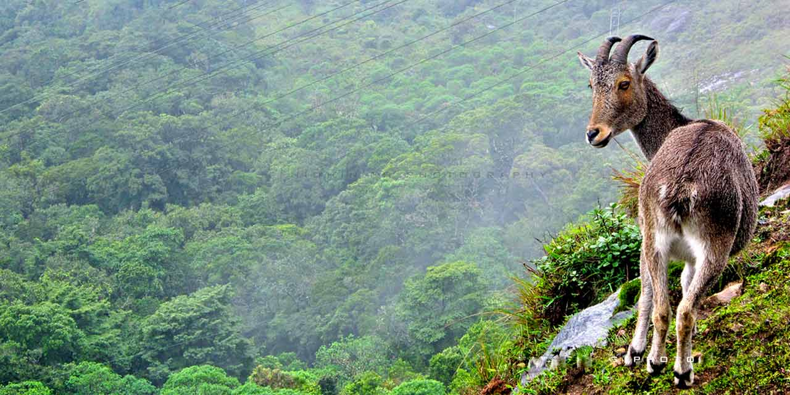

|
Munnar |
|
ERAVIKULAM NATIONAL PARK- It is a 97km^2 national park located along the western ghats and it is the first national park established in the kerala.It is administered by the kerala department of forests and wildlife division,which also run nearby the chinnar wildlife sanctuary.The main body of the park consists of a hill plateau with a base elevation of about 2000m.The terrain consists of high altitude grasslands interspersed with sholas.Twenty six species of mammals have been recorded in the park including the largest surviving poulation of nilgiri tahr,estimate at 750 individuals. |
 |
| Getting your hands on some of the most exotic holiday tour packages to Munnar Tourism is thefirst step to making your Munnar holiday a grand occasion.The Munnar Tourism of tour packages that you can choose from is a sure treat to your senses. You can either choose the suitable packages online through the different Munnar tour packages providers’ websites or
get in touch with them to discuss the various factors like the best destinations, the right packages and off course your budget. |
 |
|
Hill tour packages are specifically popular with the people who love to spend some time by the silent hills and explore the foggy surroundings giving occasional glimpses of the lush green tea gardens and the aromatic spice gardens.
|  |
|
The exotic Munnar Doors tour packages are considered to be the ideal way to make your family tour a very special occasion. Your kids will surely love the magical views of the enchanting forested surroundings, while you can spend time appreciating the eternal beauty of the eerily serene lakes and lagoons that form the backwaters in Munnar..
|  |